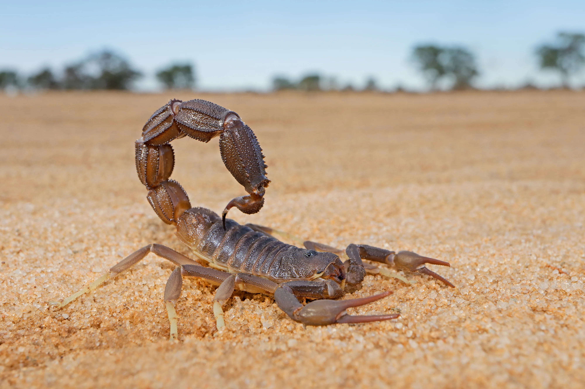

About Me
I have over 5 years of experience creating music and almost 4 years of experience in creating chiptunes, and I've worked on a number projects in that span of time (Mega Man Four Hounds, Mega Man Dimensional Analysis, and Mega Man Orbit Panic for example.) I use a program called 0CC-FamiTracker to compose NES music, and I feel that I have a great deal of experience in using this program. I have the most experience in the Mega Man style specifically but I'm willing to branch out if requested. I can do original compositions as well as covers within the Mega Man style. I can compose in one of the four sound chips I'm most familiar with: 2A03, VRC6, MMC5, and N163. I can also combine up to three chips if you would like me to, (I.e. MMC5+VRC6+N163). Feel free to contact me to go into more detail for what you want for your project.

This is how I look IRL